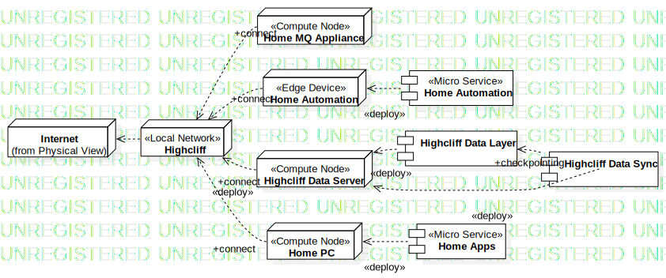
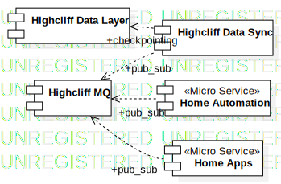

Highcliff
UMLPackage
Untitled
::
Physical View
::
Highcliff
Description
none
Diagrams

Highcliff Deployment

Highcliff Integration
Properties
Name
Value
name
Highcliff
stereotype
null
visibility
public
importedElements
Owned Elements
«Micro Service»Home Automation
Highcliff Data Layer
Highcliff Data Sync
«Micro Service»Home Apps
«Local Network»Highcliff
«Compute Node»Home MQ Appliance
«Edge Device»Home Automation
«Compute Node»Highcliff Data Server
«Compute Node»Home PC
Highcliff Deployment
Highcliff Integration
Highcliff MQ